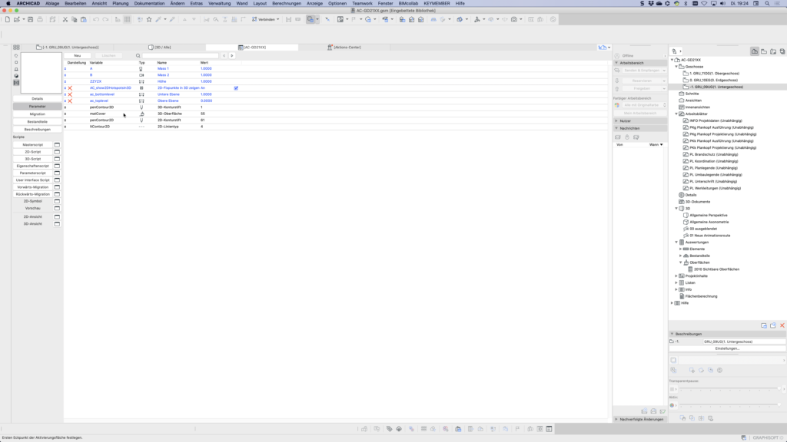

Your First GDL
General Tips
Before you start with your first script, here are some helpful tips:
- Sketch your ideas: Briefly write down your ideas to identify important parameters.
- Define requirements: Divide the requirements into basic functions and "nice to have" functions.
-
Prototyping: Experiment with different approaches to find solutions. Prototyping can help you test and refine your ideas.
-
Script structure: Comment your script and use headings to improve readability. A clearly structured code facilitates collaboration in a team.
!Start your script with some info
!Object title
!Date
!Your name
!Script name e.g. 3D-Script
Structure
your
work
with
tabstops.
"C A P I T A L & lowercase" serves only for better overview
>>Graphisoft scripts almost everything in lowercase
>>GDL cookbook recommends commands "CAPITALS"
attributes "lowercase"
END !--------------- End your script with END.
Script Structure
- Comment the script with
!and add headings. - Use tabstops for a clear structure.
- Use capital letters for commands and lowercase for attributes.
- Use subroutines to organize complex scripts.
- End each script with the
ENDcommand. - Create a new GDL and check the result in the 3D view.
- More information can be found in the Graphisoft GDL Style Guide.
Creating GDL
3D Script
1. Create a new GDL:
- Open ArchiCAD and go to the "File" menu.
- Select "New" and then "GDL Object" to create a new GDL script.
2. Insert block script:
- Open the 3D script editor in your new GDL object.
- Copy and paste the following block script into the editor.
3. Check the result:
- Open the 3D view on the left side.
!Block by Block
!20210903
!Manuel Emmenegger
!3D-Script
block 1,2,3
end !End of script
4. Check the result:
- After the command, the inputs 1,2,3 represent x,y,z. Play with these values and check the result in the 3D view. More information about this command can be found at selfgdl.de.
2D Script
In the next step, we revise the 2D representation. Open the 2D script and add the appropriate lines to generate an automatic projection from the 3D script. Use this command only for verification, as it can slow down the floor plan build-up with complex geometry. More information can be found at selfgdl.de.
!Block by Block
!20210903
!Manuel Emmenegger
!2D-Script
project2 3,270,1
end !End of script
Saving
Save your first GDL in the embedded library via "File/save" and save the ArchiCAD file as .pln to integrate the GDL.
3D Parameters
Geometry
Now it's time to parameterize this element. We'll start with some standard parameters. Open the "Parameters" tab on the left side in our already created element. There should be three standard parameters here: Parameter A for the X-axis, Parameter B for the Y-axis, and Parameter ZZYZX for the Z-axis.
Replace the numbers in the script with the standard parameters A, B, and ZZYZX and check the changes in the 3D view. These parameters also affect the 2D view thanks to the "project2" command.
Save the element, close the GDL editor, and place the element with the object tool.
!Block by Block
!20210903
!Manuel Emmenegger
!3D-Script
block A,B,ZZYZX
end !End of script
Press "T" to open the object settings, where you'll find the parameters A, B, and ZZYZX. Your parameterized GDL object is now created.

Representation
To explore more parameters, select the GDL object and press Ctrl+Shift+O.
Create two new parameters in the "Parameters" tab. For naming, a consistent concept is recommended, possibly based on the Graphisoft Standard. Longer names are helpful to directly recognize the parameters without needing a legend.

The parameter table contains the following important columns:
- Display: Controls the display in the interface (e.g., bold, hidden)
- Variable: Variable name for the script
- Type: Type of variable (e.g., pen, surface)
- Name: Display name for the user
- Value: Default value of the parameter
More details about parameter types can be found in the documentation.
Now let's add the commands "pen" for the contour pen and "set material" for the surface in the script. Then save the element and check the result.
!Block by Block
!20210903
!Manuel Emmenegger
!3D-Script
pen penContour3D
set material matCover
block A,B,ZZYZX
end !End of script
Custom 2D Script
2D Parameters
Now we want to take a closer look at the two-dimensional representation of our block. For this, we'll work with the commands line2 and rect2 as well as the attributes pen and set line_type.
A separate 2D script offers two important advantages:
-
For complex 3D elements, the floor plan representation is faster because not everything needs to be projected.
-
Floor plans often use symbols instead of pure projections, e.g., for sockets and switches.
To distinguish the project2 lines from our own, we first create new parameters as shown in the screenshot. 
{kind=link}
The commands "pen" and "line_type" are inserted after project2, so that the project2 lines are drawn with pen 1 and line type 1, and all other lines receive the new attributes.
line2
With the line2 command, we draw the four lines of our block as seen from above. The command uses two coordinate pairs (x1,y1,x2,y2) and draws a line between these points. The four lines form a rectangle that should be congruent to the project2 representation in the 2D view.
!Block by Block
!20210903
!Manuel Emmenegger
!2D-Script
project2 3,270,1
pen penContour2D
set line_type ltContour2D
!line2 x1,y1,x2,y2
line2 0,0,A,0
line2 A,0,A,B
line2 A,B,B,0
line2 0,B,0,0
end !End of script
rect2
The rect2 command allows replacing the four lines with a single rectangle definition. A rectangle is drawn between two points (x1,y1) and (x2,y2).
!rect2 x1,y1,x2,y2
rect2 0,0,A,B
As you've probably noticed, the two commands "line2" and "rect2" don't work the same way as the "block" command. With the "block" command, we couldn't determine the starting point of the block, i.e., the object origin (starting point in space), as we always automatically started at point 0,0,0. With the "add" command, this limitation can be bypassed later. The 2D commands thus offer more flexibility in positioning the elements.
poly2
After learning about the line tools, we now want to create hatches with the "poly2" command. For this, we also need the "set fill" command to control the hatch type.
Create the parameters as shown in the screenshot and add the hatch type in the script after the pen and line type definitions.

Replace the rect2 command with poly2 and add the number of corners (4) and the display type (1+2+4+0) before the xy values. The points correspond to the same endpoints as with line2.
The "poly2" command differs from "rect2" by:
- Variable number of corners
- Hatch or contour display
- Possibility of open polygons
!Block by Block
!20210903
!Manuel Emmenegger
!2D-Script
project2 3,270,1
pen penContour2D
set line_type ltContour2D
set fill fillType2D
!poly2 n,ContoursAndFill,
! x1,y1,
! ..
! Xn,yn
poly2 4,1+2+4+0,
0,0,
A,0,
A,B,
0,B
end !End of script
poly2_
The poly2_ command offers extended control options for edges and pens. We start with poly2_, where each xy value gets a status: 1 for visible lines, -1 for polygon endpoint. Details about the status can be found at selfgdl.de.
!poly2_ n,ContoursAndFill,
! x1,y1,Status,
! ..
! x2,y2,Status
poly2_ 4,1+2+4+0,
0,0,1,
A,0,1,
A,B,1,
0,B,1
poly2_A
With poly2_A, we control the foreground pen of the hatch - ideal for solid hatches.
!poly2_A n,ContoursAndFill,FillPen,
! x1,y1,Status,
! ..
! x2,y2,Status
poly2_A 4,1+2+4+0,penFront2D,
0,0,1,
A,0,1,
A,B,1,
0,B,1
poly2_B
The poly2_B command offers the most extensive control options, as both foreground and background pens can be defined. After saving and placing the element in the floor plan, all created parameters can be tested.
!poly2_B n,ContoursAndFill,FillPen,
! BackgroundPen,
! x1,y1,Status,
! ..
! x2,y2,Status
poly2_B 4,1+2+4+0,penFront2D,
penBack2D,
0,0,1,
A,0,1,
A,B,1,
0,B,1
Published on: 2025-03-15 | Code: ac210-1010 | Author: Manuel Emmenegger | bimdo.ch
Tags: Archicad, GDL, Library | Original: German